Sobre La Marteja
La Marteja está ubicada en Calle 7 #2-59, en el casco urbano de Salento, Quindío, a solo 5 minutos a pie de la terminal de buses y del parque principal. Contamos con varios apartamentos y estudios totalmente equipados, con parqueadero gratuito, balcón y vistas a las montañas del Eje Cafetero. Se admiten mascotas (pueden aplicar cargos).
Estamos a 34 km del Aeropuerto Internacional El Edén, cerca de atractivos como el Valle de Cocora, el Jardín Botánico de Pereira (35 km) y el Zoológico Ukumarí (46 km). Los huéspedes destacan la excelente ubicación y la atención de Mario, el anfitrión.
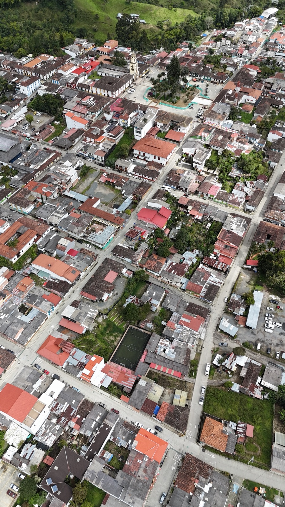
Nuestros Apartamentos
Apartamento 1 - Estudio con Balcón
Cama doble, iluminación cálida y balcón privado con puertas de colores típicas de Salento. Ideal para parejas.
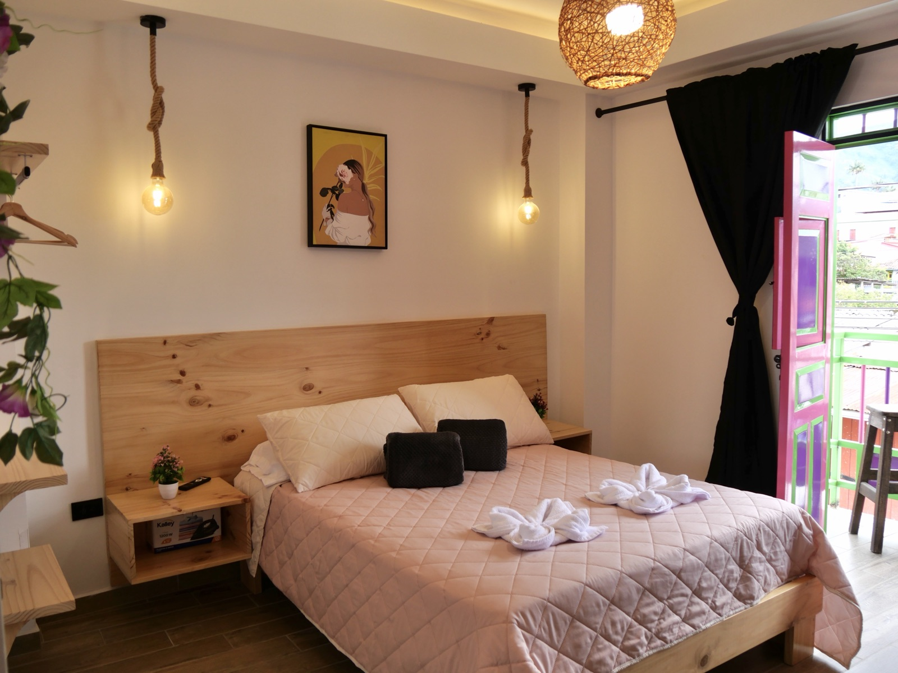
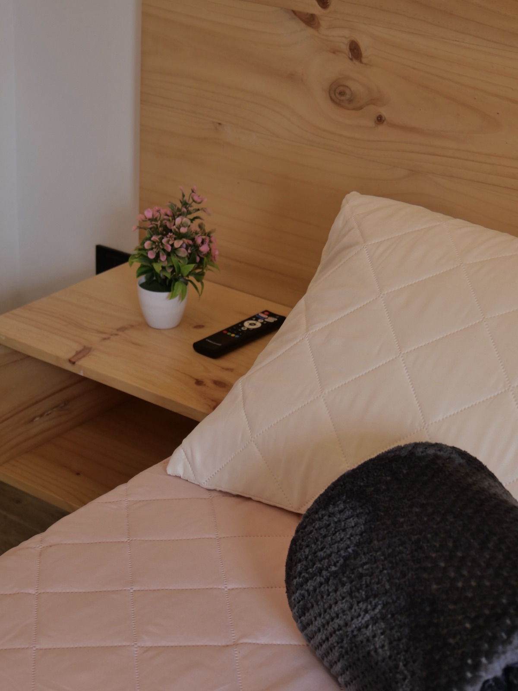
Apartamento 2 - Habitación Acogedora
Espacio confortable con cama y detalles decorativos como el letrero "Vive · Ríe · Ama". Perfecto para una estadía tranquila.
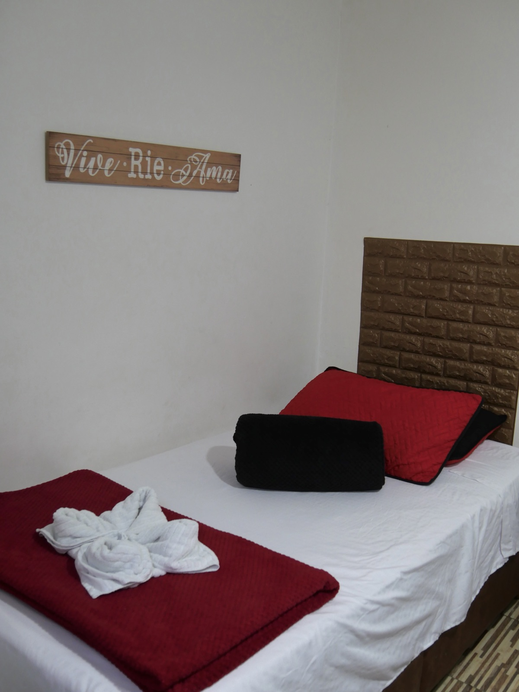
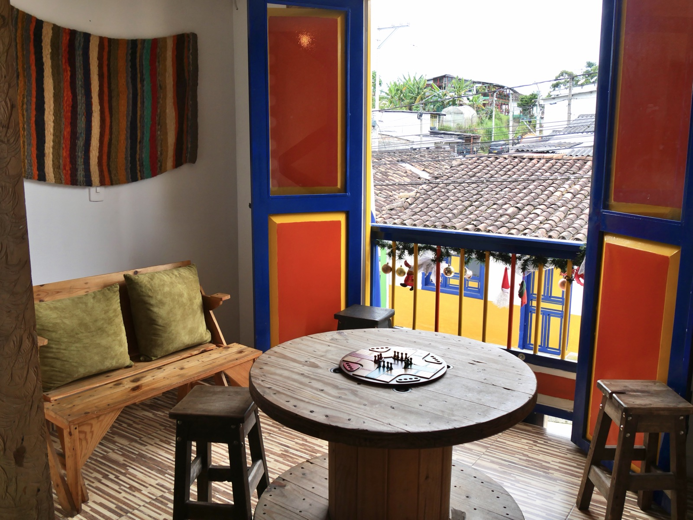
Apartamento 3 - Suite con Jacuzzi y Vista
Nuestra suite especial: jacuzzi en piedra junto a un gran ventanal con vista panorámica al pueblo de Salento y sus montañas.
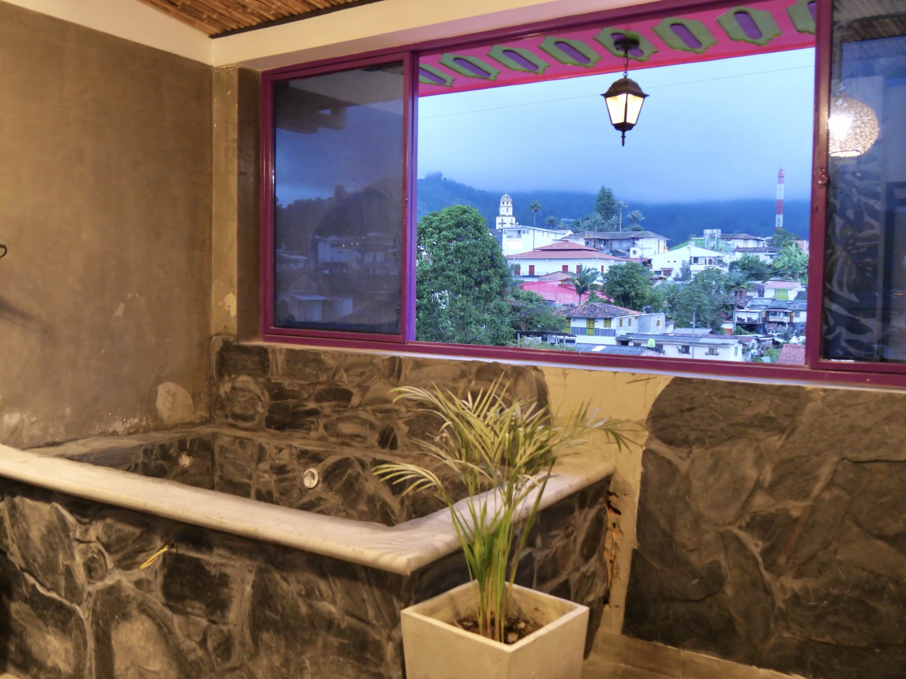
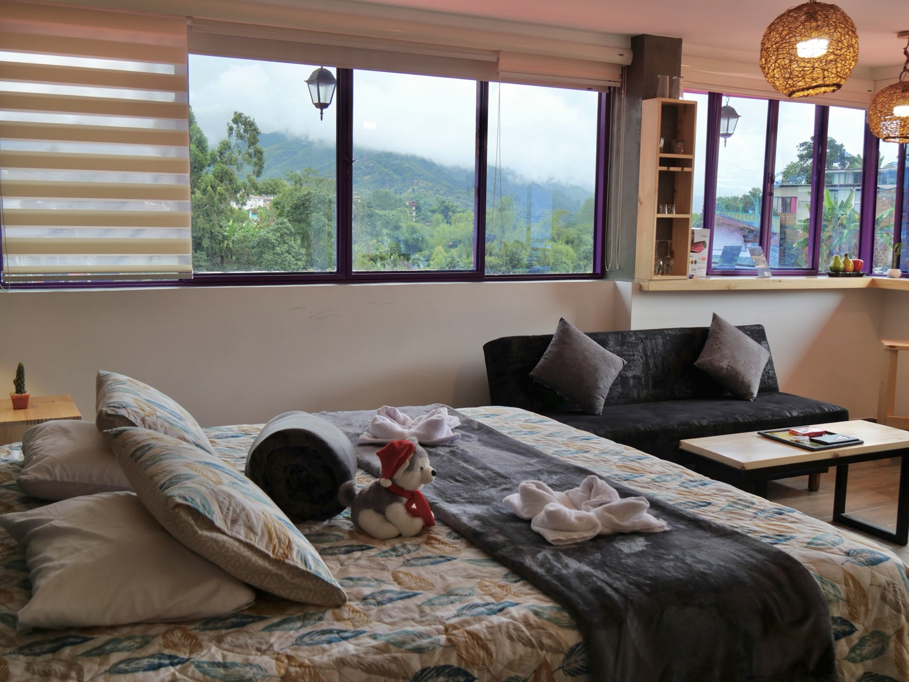
Apartamento 4 - Familiar
Amplio, con cama doble y cama adicional, banca de madera y el mensaje "La vida es bella". Ideal para familias.
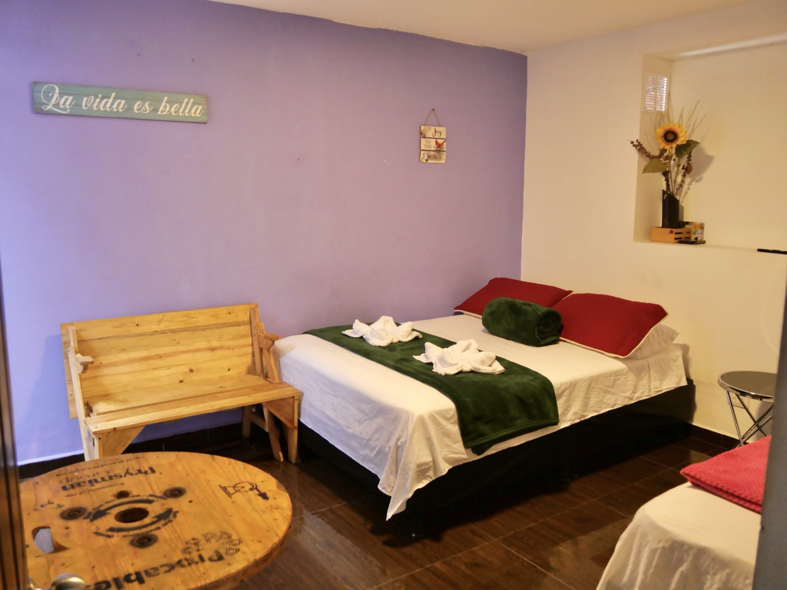
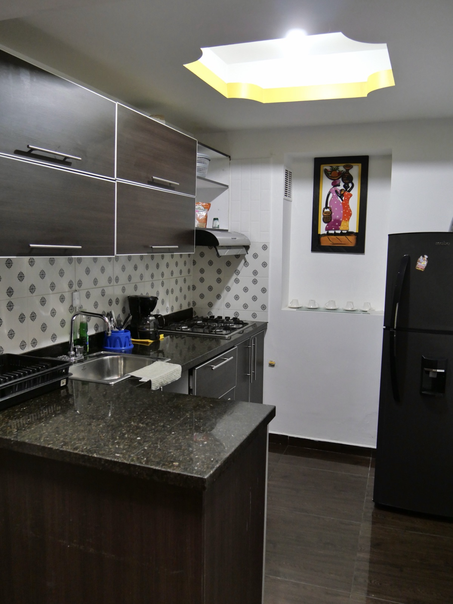
Apartamento 5 - Estudio Amplio con Balcón
Estudio luminoso con cama doble y cama sencilla, decoración artística y balcón con vista a los tejados de Salento.
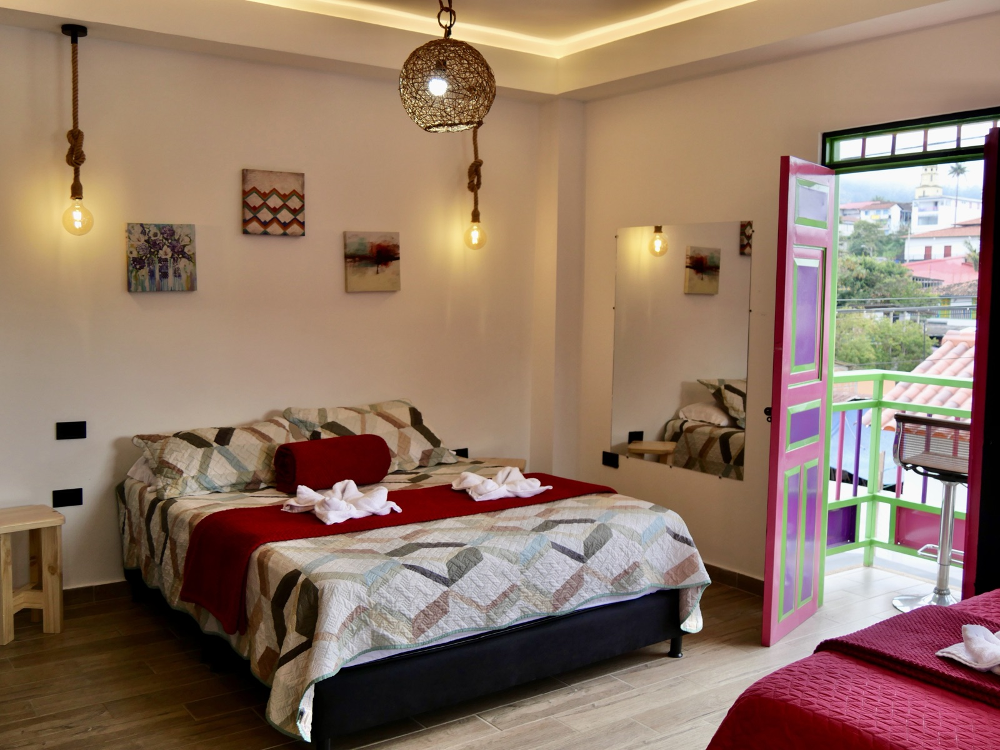
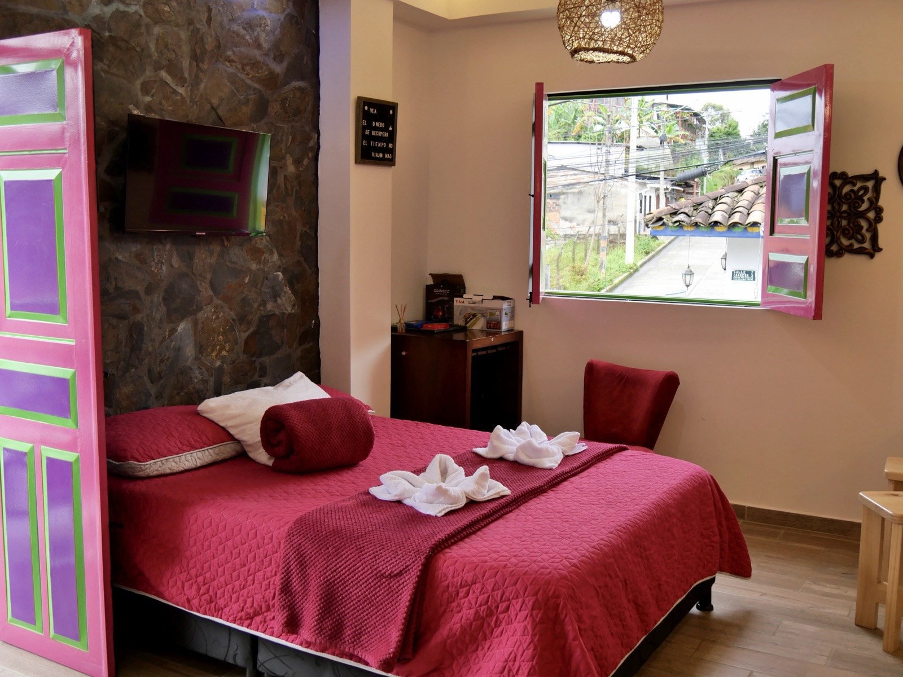
Comodidades incluidas
- WiFi gratis
- Parqueadero gratuito
- Cocina equipada: cafetera y refrigerador
- TV y escritorio de trabajo
- Habitaciones familiares, balcón y vistas a la montaña
Servicios y Políticas
Facilidades más valoradas: parqueadero gratis, WiFi gratis, habitaciones familiares y habitaciones para no fumadores.
¿Cómo reservar?
- Consulta fechas de check-in y check-out disponibles
- Elige el apartamento según el número de huéspedes
- Confirma tu reserva (solo se aceptan pagos en efectivo)
Información importante
- Check-in: de 3:00 p. m. a 11:30 p. m.
- Check-out: de 6:00 a. m. a 11:00 a. m.
- Edad mínima para el check-in: 18 años
- No se permite fumar ni fiestas/eventos
- Mascotas permitidas (pueden aplicar cargos)
Lo que dicen nuestros huéspedes
Puntuación general: 9.6/10 - Personal 9.8, Ubicación 9.7, Limpieza 9.5, Instalaciones 9.5.
"Everything you could need, and in a great location. It was so great we ended up extending to stay an extra night."
- Olivia, Reino Unido
"The owner Mario was super helpful and polite! Everything was great, including the facilities and the location."
- Jimmie, Finlandia
"Loved our stay here!!! Great value for money, super clean, great location and views of Salento."
- Michelle, Reino Unido
Contacto y Reservas
Calle 7 #2-59, 631020 Salento, Quindío, Colombia
Consulta disponibilidad, precios y más de 175 fotos directamente en Booking.com.
Ver disponibilidad en Booking.com